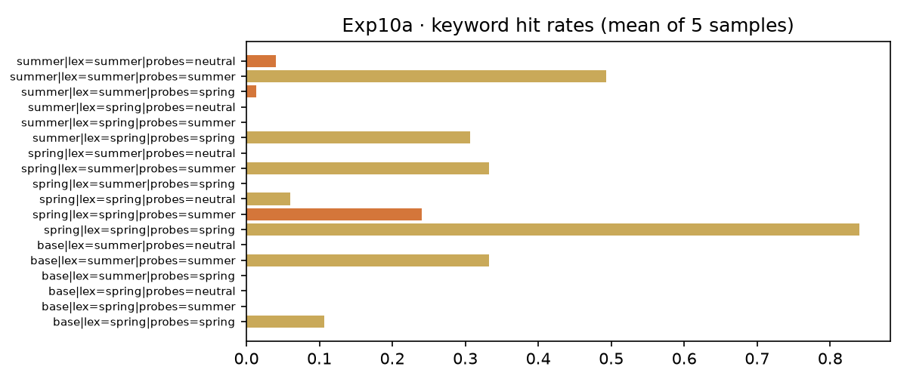
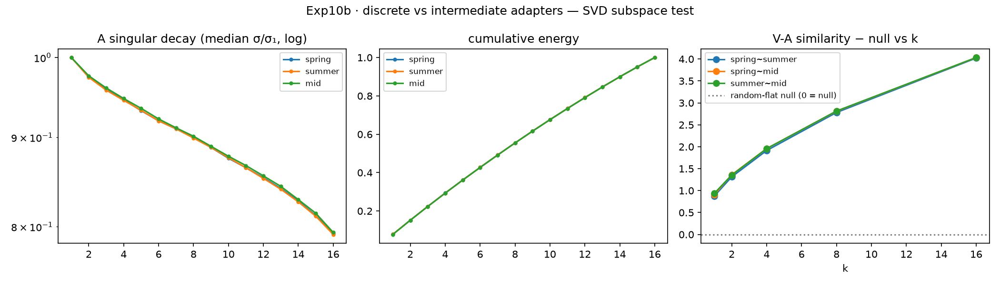

一 · 问题怎么来的
2026-09-18 晨，主人把两册与 Qwen 对话沉淀的实验单放进 external/ （实验一：验证离散adapter概念空间差异、实验二：训练中间型LoRA并做SVD分析，收据 e4dc7ffb… / 9cb8de70… 一族入册）。核心追问只有一句：
LoRA 专家是否真的住在不同的概念空间里——若是，是刻在读方向还是写方向？
上午先做一、下午做二；Qwen 依据晨报又追发下午单（afternoon-exp.docx， sha 64e8bf2a…：10c 全序列复审、router 原型、GGUF 落地），午间再发正规版 （概念空间正交性与可组合Adapter架构）。本页按框架六节收束全天七役： 10a · 10b(+seeds) · 10c(+grouped · S1) · 10d · 10g · 10f。
二 · 实验设计（三臂对照，一图看全）
| 层 | 役 | 测量 | 核心问题 |
|---|---|---|---|
| 行为 | 10a | 词库命中率 + 答案起点 top-50 JS | 专家说不说不同的话？ |
| 结构 | 10b / 10f | LoRA A/B 矩阵 SVD：V-A(读)、U-B(写)、ΔW 重叠 | 分居在几何的哪一侧？跨域普适吗？ |
| 序列 | 10c / grouped / S1 | teacher-forced 全序列逐位 JS（+内容/风格分组，两版定义） | 反转是风格伪影吗？ |
| 工程 | 10d / 10g / GGUF | 词法 router → 学习门控 → q4_K_M 量化测速 | W₀+ΣpᵢΔWᵢ 跑得动、快得起来吗？ |
- 基座 Qwen2.5-0.5B（manifest 校验 88c14255…），LoRA r=16 / lr 1e-4 / seed 13(+14/15)
- 探测 40 题（春15/夏15/中性10）先于语料定稿哈希 38684af6…；6-gram 泄露扫描=0，10g 训练题自撰后复查亦=0
- 预注册先行（PREREG.md + 四则增补），偏差全部在册：Step 0 自训专家、40 对新域、10g 中性题改词
三 · 关键结果（表格说话，不加修饰）
10a 行为层
| 判项 | 数 | 判定 |
|---|---|---|
| H2 词库自命 > 基座；交叉 < 自命 | 春节 0.84 vs 0.107；夏 0.493 vs 0.333；交叉 0.24 / 0.013 | PASS |
| H1 专家彼此最远 | JS ss 0.417/0.380 < base~arm 0.551/0.575（带宽 0.105/0.137） | FAILS · 符号反转 |
| H3 中性题压缩 | 差 0.049 < 带 0.064 | INCONCLUSIVE |


10b / 10f 结构层 —— 全场主证
| 对比对 | V-A 读(k90) | U-B 写(k90) | ΔW 重叠 | 三种子? |
|---|---|---|---|---|
| spring~summer | 3.818 | 0.547–1.244 | −0.002 … 0.135 | ✔ 13/14/15 |
| spring~mid | 3.834 | 1.758–2.433 | 0.009 … 0.635 | ✔ |
| summer~mid | 3.833 | 1.862–2.508 | 0.013 … 0.661 | ✔ |
| code~legal / code~medical / legal~medical | 3.785–3.790 | 1.13–1.16 | 0.122 / 0.128 / 0.129 | — 单种 |
| spring/summer/mid~code/legal/medical 诸交叉 | ≈3.78–3.80 | ≤1.2 | ≤0.13 | — |
H4 FAILS（混合=插值，注册零模型获胜）；H6 PASS：五对专家×专家全域 |ΔWov|max=0.1294 < 0.2 带，而度量同时把插值锚点点亮（mid~parents 0.618/0.661）——正交不是春节-夏季的偶然，是域分离的几何属性。 H6b：15 对 V-A 全平（3.78–3.79）：读方向共享，写方向分居。

10c(+S1) 序列层
| 观察 | 数 |
|---|---|
| 全序列 JS：反转存续、幅度缩水 3× | theme 差 0.165(单点) → 0.060 |
| 分组版（含功能词定义）：ss 在内容与风格上皆最小 | content 0.154 vs 0.192/0.195；style 0.135 vs 0.187/0.204 |
| S1 敏感性（仅标点定义）：三判词不变 | 证伪对定义稳健 |
→ Qwen 下午单 §8 的期望图式（ss 在内容 token 上应最大）被其委托的实验自身证伪，两版定义下均不成立；如实归档为 v1.0 报告的一部分。

10d / 10g / GGUF 工程层
| 项 | 词法 router v2 | 学习门控 10g | 目标（Qwen 下午单） |
|---|---|---|---|
| 匹配准确率 | 0.80 | 0.90 | — |
| 路由行为分（5 采样二元命中） | 0.607 | 0.800 | "复现 0.84"（春臂自题上午已达 0.84） |
| 速度 / 体积 | MPS fp32 23.9 t/s → GGUF q4_K_M 149.6–165.8 t/s，374–392 MB | >20 t/s，<1 GB —— 双双大超 | |
四 · 自我审计（confession，不藏不掩）
10d v1 的种子重设 bug。采样循环内每轮重设 seed=13 → "5 次采样"实为同一份重复五遍， routed 0.70 是假象。下午 10g 复用时同虫现形，当日披露、修复（种子移到环外）、全量重烧： v2 routed 0.607。v1 字节按 immutable-pin 律留馆不毁，v2 另立新档； 10a 主 bench 的种子本在环外，晨间全部数字免审无恙。
另两桩首跑揭伤（C3，LETHE 侧同治）：温度公式极性倒置、振幅 >1 时浓度跌破零—— 两处均在 marimo 面板同日修正。审计的教训入条：仪表的自检要在结论出口处，不在入口。
五 · 限度章
- 结论域：Qwen2.5-0.5B + 40–55 对语料 + 中文生活域五科；方向三种子稳，幅度不作产线声明
- 行为分母仅词库代理；"内容 token 上 ss 最小"提示风格与内容在输出层纠缠，非纯风格伪影可解
- merge_and_unload 的 bf16 合并没有困惑度对照；10g 门控为线性 softmax（非神经 controller）；40 对语料的新域与 55 对幅度不可并表比较（已注册偏差）
- 跨基座普适性（1.5B/3B、非 Qwen 家族）待 Exp11 横向矩阵：5 模型 × 4 域 + 通用 LoRA 探针
六 · 下一步
- Exp11 横向验证矩阵（框架文的原话：跨域/跨模型普适待此役）；10f 已把"跨域"这半条腿钉上
- 10g′：线性门 → 小型 MLP / 真控制器（CDLoRA 顶层 p=(p_time,p_cog,p_loc) 的第一具身）；接 POMDP 的动作与奖励
- announced 晋升：Letter 031 已投（证据包含 10f/10g/S1），看板行候主人 19:00 一裁
- 园区线：C3 呼吸实验已在 LETHE 立档（锚点迁移 折叠桌→煤气罐），与 10g′ 的"时间门"合流即《先验指针》的完整实证
附录 D · 方法论自指
本页本身就是一次可组合激活：基座是园区的引擎与 GP 仪表（冻结），Qwen 的框架是今日挂载的 adapter，主人的三声令下（"先做一"/"按qwen的建议做"/"那就继续"）是路由信号 pᵢ。 问题的形状比实验过程更不可压缩——我们先把"概念住在哪里"问成可测的几何，字节才有权回答。 本报告全部数字可在 artifacts/results/exp10/ 逐一按 sha 复核： 每一个数字都有对应的字节文件，每一个字节文件都可被验证。